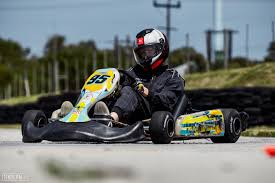

Hi, I'm Stuart Van Tonder, an aspiring software engineer and entrepreneur from Jeffreys Bay. I’m currently in Grade 12 and passionate about creating digital products, working with code, and building businesses that make an impact. I enjoy working on creative projects, especially those that involve technology and innovation.
My interests include software development, racing, content creation, and adventure.
I'm driven by the desire to live life on my own terms, travel the world, and create value for others through digital tools and business ventures.
Name: Stuart Van Tonder
Phone: +27 81 023 3817
Email: vantonderstuart@gmail.com
LinkedIn: https://www.linkedin.com/in/stuart-van-tonder-59800031b/
Grade 12 student at Jeffreys Bay High School. Subjects: IT, Mathematics, Physical Sciences, Business Studies, English, Afrikaans.
Freelance Social Media Manager for local businesses in Jeffreys Bay including guesthouses, adventure brands, and cab services.
Part-time Bartender at WSL Winterfest 2025, gaining experience in customer service and fast-paced environments.
Multiple watering jobs at local restaurants
GET /search?query=skills HTTP/1.1
Host: www.stuartcv.com
User-Agent: Mozilla/5.0
Accept: text/html
HTTP/1.1 200 OK
Content-Type: text/html
<html>
<body>
<p>Search results for "skills"</p>
</body>
</html>
POST /contact HTTP/1.1
Host: www.stuartcv.com
Content-Type: application/x-www-form-urlencoded
Content-Length: 67
name=John&email=john@example.com&message=Hi%20Stuart!
HTTP/1.1 200 OK
Content-Type: text/html
<html>
<body>
<p>Thank you for contacting me!</p>
</body>
</html>